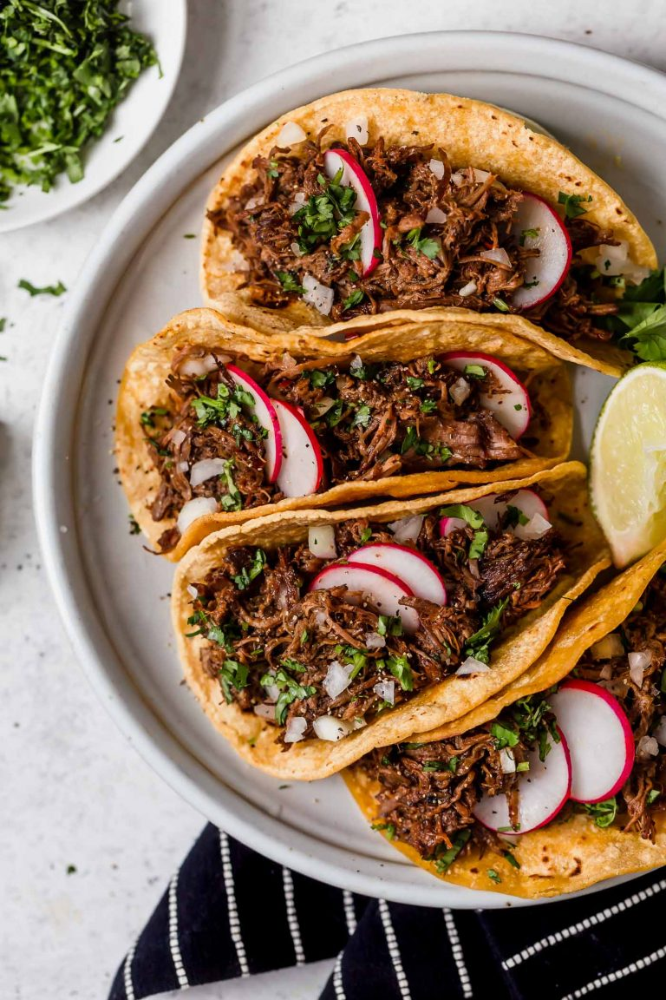

Barbacoa recipe
adapted from cookingclassy.com
great barbacoa please make it

Ingredients
- 3 lb chuck roast
- Salt and freshly ground black pepper
- 2 TBSP lard
- 1 1/4 cups beef broth, divided
- 3 - 4 chipotle chilies in adobo*
- 6 garlic cloves
- 1 1/2 Tbsp ground cumin
- 1 Tbsp dried oregano
- 1/4 tsp ground cloves
- 3 bay leaves
- 1/4 cup fresh lime juice
Directions
- Cut roast into 6 portions while removing any large pieces of fat. Heat 1 Tbsp lard in a skillet.
- Dab roast dry with paper towels, season with salt and pepper (about 1 tsp salt 3/4 tsp pepper). Add 3 pieces to skillet and sear until browned on all sides. Transfer to a slow cooker.
- Add remaining 1 Tbsp lard to skillet and repeat process with remaining 3 roast pieces. Nestle beef portions side by side in an even layer in slow cooker.
- In a food processor, pulse together chipotle chilies, garlic and 1/4 cup beef broth until well pureed, occasionally stopping and scraping down sides of processor.
- In a 2 cup liquid measuring cup or in a bowl, whisk together remaining beef broth with chipotle mixture, cumin, oregano and cloves. Pour mixture over beef in slow cooker, then nestle bay leaves between beef portions.
- Cover and cook on low heat 8 - 9 hours**.
- Remove beef from slow cooker (leave broth) and shred. Stir lime juice into broth in slow cooker then return beef to slow cooker and cook on low or warm 20 - 30 minutes longer.
- Strain liquid from beef and serve in tortillas with desired toppings.